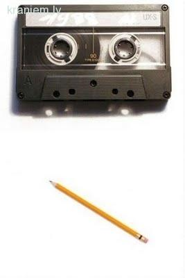
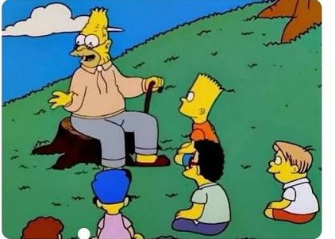
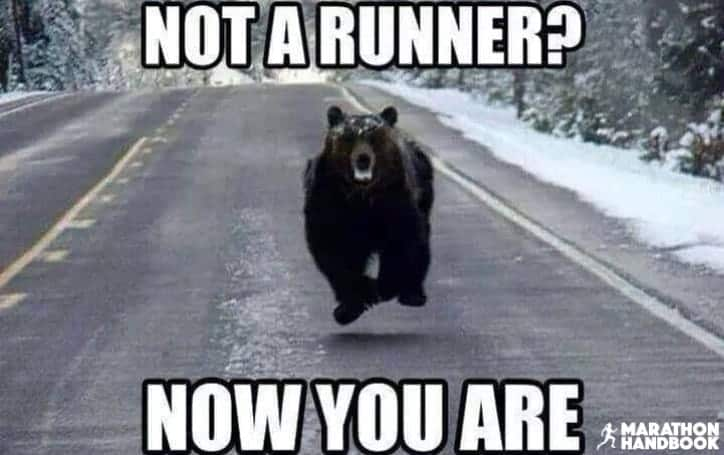
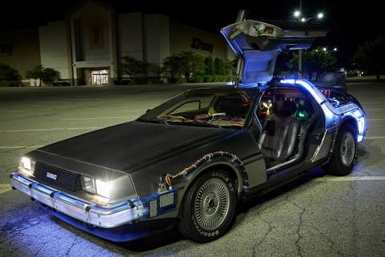
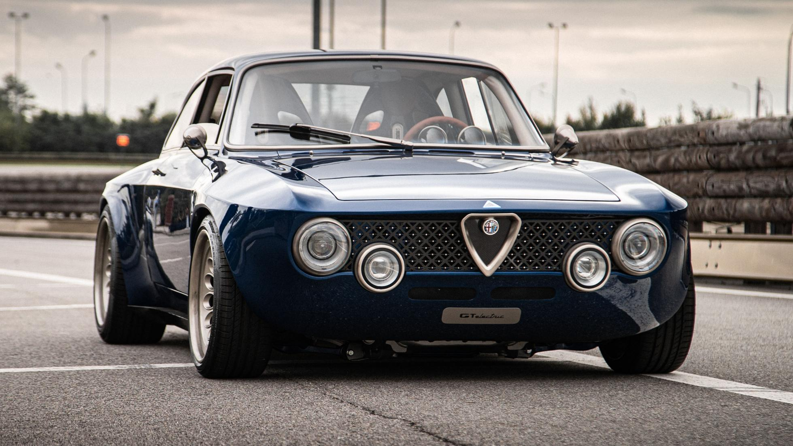
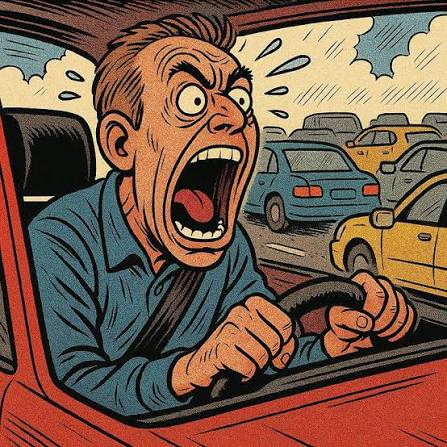
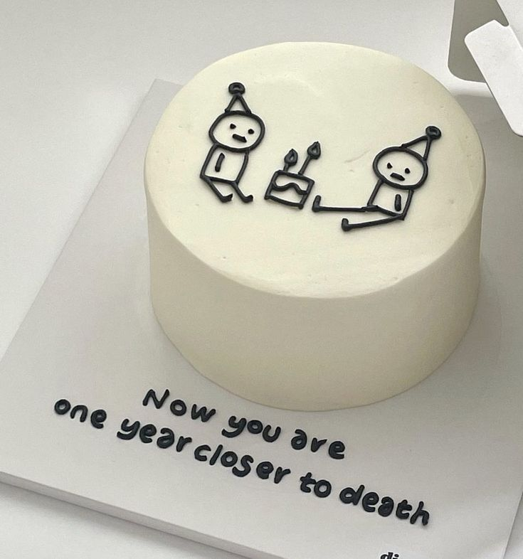
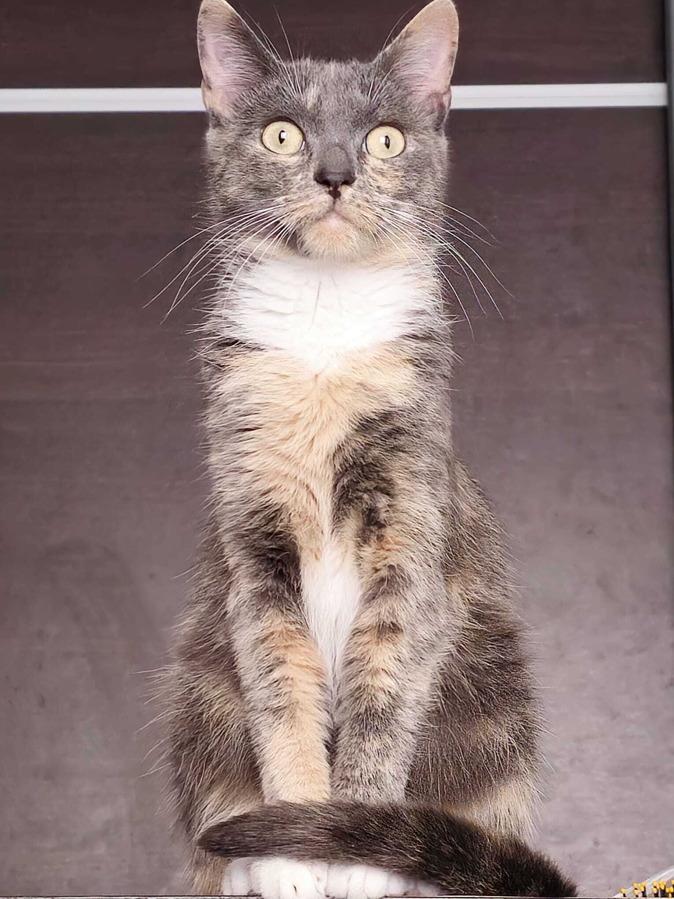
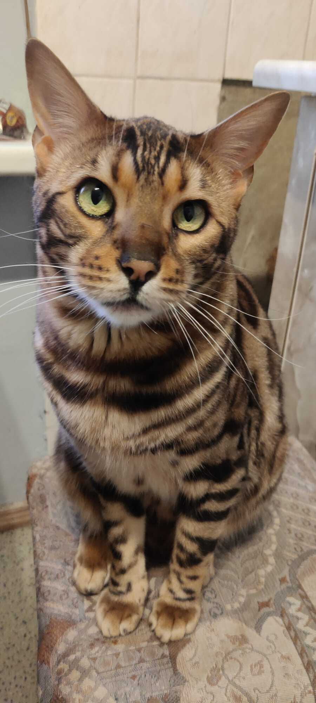

Critical Error 0xNOPE_0031
A fatal exception has occurred in module GUNARS.SYS.
The system cannot continue — mostly because it simply doesn't want to.
Press OK or X to delete all your desktop icons. Every single one.
System Warning!
Do not try to bypass this survey.
To unlock the desktop, the user Gunārs must complete the age verification and life-experience survey. It's a new law, recently introduced.







Select your real age from the list and confirm.
Achievement Unlocked!
Level 32 reached — “Verification complete”.

Has successfully survived 32 years on planet Earth, can identify any car with just a glance, directed air traffic at altitude without breaking a sweat, ran a marathon because apparently driving wasn't an option, and unlocked Level 32 status. Warranty on the original parts has officially expired.
- 🔧 Certified mechanic (unofficially): has opened the hood and nodded knowingly.
- 🏁 Survived every group run: and lived to complain about it.
- 🛫 Frequent sky-watcher: can spot a plane before he hears it.
- 🏆 Successfully parallel parked on the first try — once. Witnesses are still in shock.
- 🥇 Holds the household record for saying "we're leaving in five minutes" (current best: 45 min).
- 🎖️ Can fall asleep in under 60 seconds, anywhere, except when actually going to bed.
- 🚀 World-class at explaining exactly why the other driver was wrong.
All jokes aside — happy 32nd birthday! I hope you have an amazing day and an even better year ahead.

🐱 Cat No. 1
🐱 Cat No. 2to your dog 🐾
Dear dog! We don't know each other and probably never will (we don't leave the house on principle). Still, we're truly happy about your human, whose birthday is today. We hope he tosses you at least 32 treats — one for each year. If not — remind him that we cats see everything. 🐾